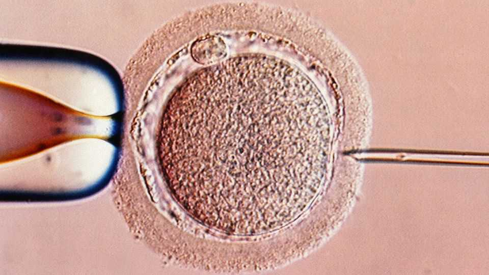

Do high-tech “add-ons” increase the chance that IVF will work?
A big new review suggests most such procedures don’t help
June 25th 2026

TRYING TO conceive through in vitro fertilisation (IVF) leads to disappointment more often than not. About 60% of IVF attempts fail. Fertility clinics offer a long list of tests and procedures purported to boost their customers’ chances. But a review of the evidence, published on June 23rd in the Lancet Obstetrics, Gynaecology & Women’s Health, found no convincing evidence that most of these “IVF add-ons” are helpful. Worryingly, lots of the published evidence was dubious.
The review examined 157 randomised trials of various IVF add-ons. The researchers ran each through a checklist designed to spot signs that the data may have been manipulated. That list was developed in 2023 by fertility researchers (including some of the review’s authors) who had noticed a growing number of fraudulent studies. They looked for things such as implausible study timelines, strange participant data or holes in a trial’s paper trail.
All told, nearly half of the trials did not pass muster. The remaining 85 covered ten commonly used add-ons. Of those, only three procedures showed evidence of abenefit, although the evidence was not particularly strong. The three procedures in question were endometrial scratching (which involves deliberately disturbing the lining of the uterus), EmbryoGlue (in which an embryo is dipped in a solution of hyaluronic acid, which is naturally found in the reproductive tract), and physiological intracytoplasmic sperm injection or PICSI (which tries to select high-quality individual sperm cells).
The data on three other IVF add-ons, though also limited, suggested they had no effect on the chances of a successful pregnancy. These three were corticosteroids (a class of anti-inflammatory drugs), genetic testing of the embryo for abnormal chromosomes and biopsy of the uterine lining to assess genetic expression.
Data for the remaining four procedures were too scant to make a judgment either way. These were acupuncture, intravenous infusion of fats derived from eggs or soyabeans (in the hope this might calm an immune reaction to the embryo), and injections of platelet-rich plasma into either the uterus or the ovaries (platelets being rich in tissue-rejuvenating proteins).
The trials were not just few in number but mostly small in scale too. The median trial had only about 160 patients, which would limit its ability to detect small or subtle effects. The reviewers could not rule out the idea that some interventions might work for a subset of patients. But being able to say who, if anyone, might benefit from any of them would require more and better research—as well as eagle-eyed journal editors weeding out the fishy sort before it is published. ■
Curious about the world? To enjoy our mind-expanding science coverage, sign up to Simply Science, our weekly subscriber-only newsletter.